Noto, Ishikawa: things to do, food and stays
Noto · Ishikawa
Noto
Highlighted on the Ishikawa map.

Stay
能登九十九湾 百楽荘
Noto Tsukumo Wan Hyakuraku So
Inn in Etsusaka, Noto with local seafood dinners.
縄文温泉の宿 真脇ポーレポーレ
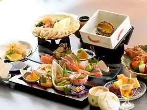
Jomon Onsen No Yado Mawaki Porepore
Inn at Jomon Onsen in Mawaki, Noto.
日本百景に囲まれた洞窟風呂の宿 百楽荘 能登九十九湾
Nippon Hyakkei Ni Kakoma Reta Dokutsu Furo No Yado Hyakuraku So Noto Tsukumo Wan
体験交流施設 ラブロ恋路
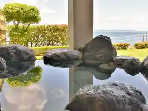
Taiken Koryu Shisetsu Raburo Koiji
Dining
民宿 ふらっと
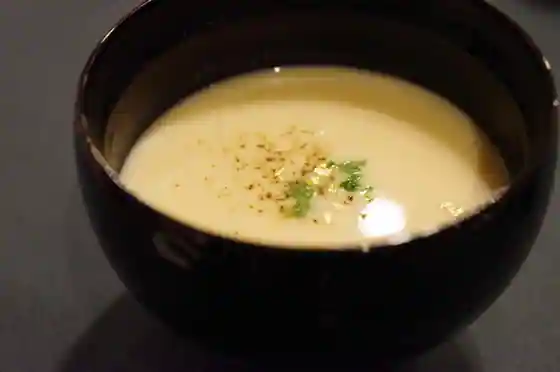
Minshuku Furatto
マルガージェラート 能登本店
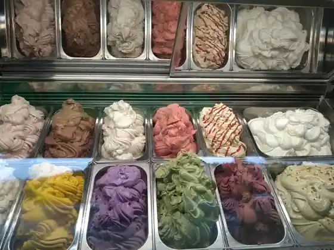
Marugajierato Noto Hon
もりもり寿し 能登総本店
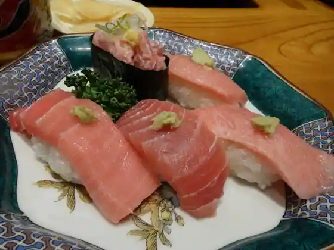
Morimori Hisashi Shi Noto So Hon
百楽荘
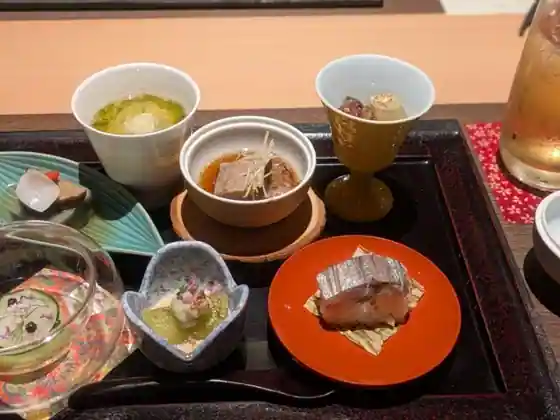
Hyakuraku So
津久司
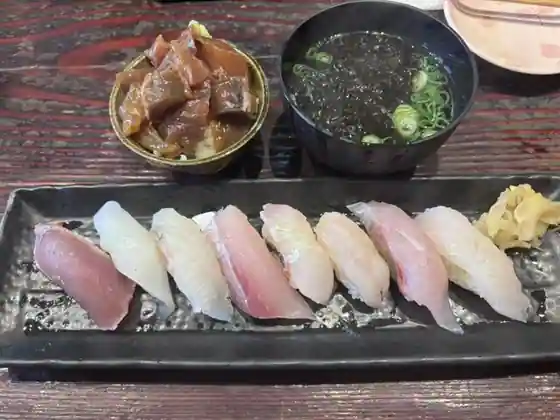
Tsuku Tsukasa
夢一輪館
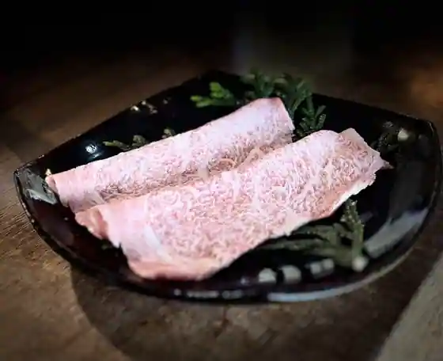
Yume Ichirin Kan
日本海倶楽部
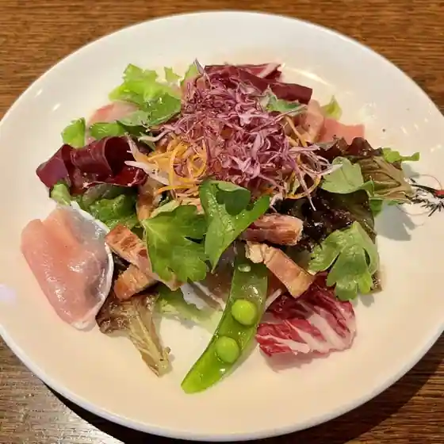
Nihonkai Kurabu
紅寿し
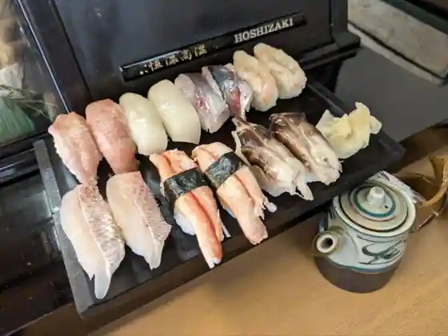
Kurenai Hisashi Shi
真脇ポーレポーレ
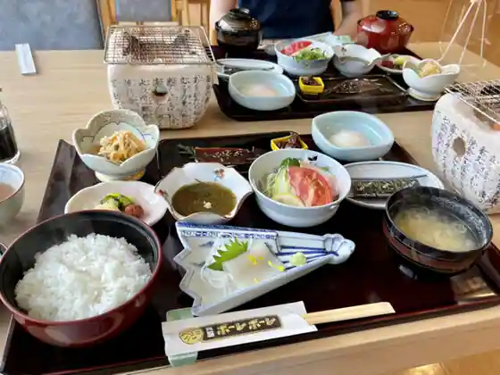
Mawaki Porepore
ラブロ恋路
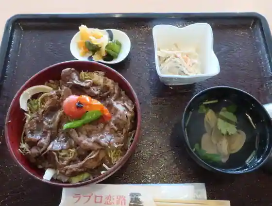
Raburo Koiji
かね八
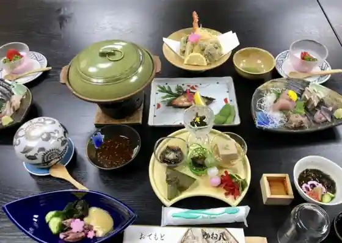
Kane Hachi
ホテルのときんぷら
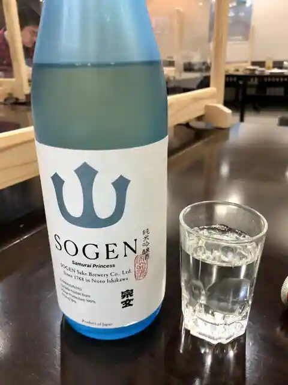
Hotel Notokinpura
料理民宿 田の浦荘
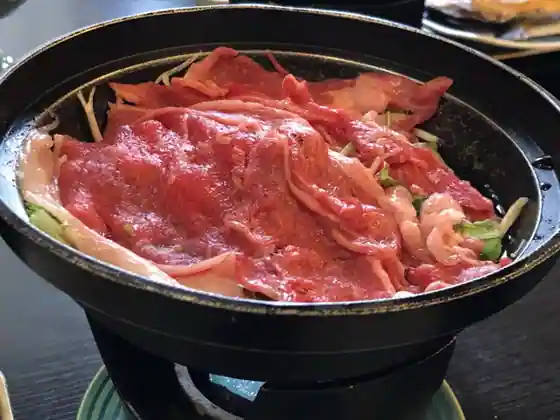
Ryori Minshuku Ta No Ura So
七味ラーメン
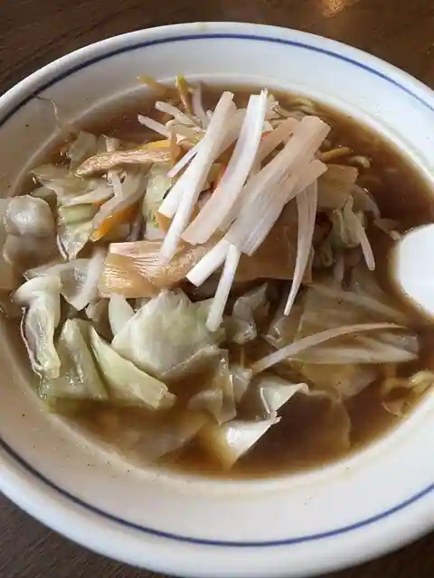
Shichimi Ramen
能登うしつ荘
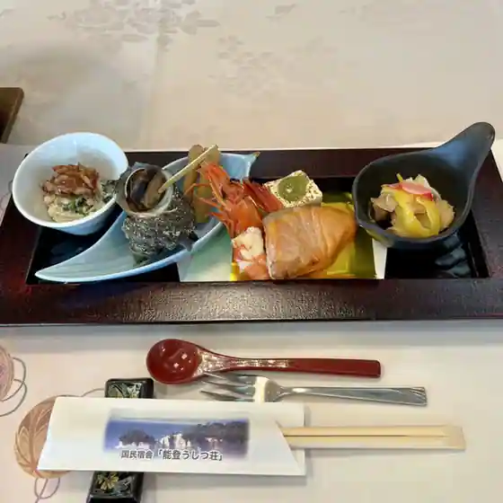
Noto Ushitsu So
道の駅 桜峠
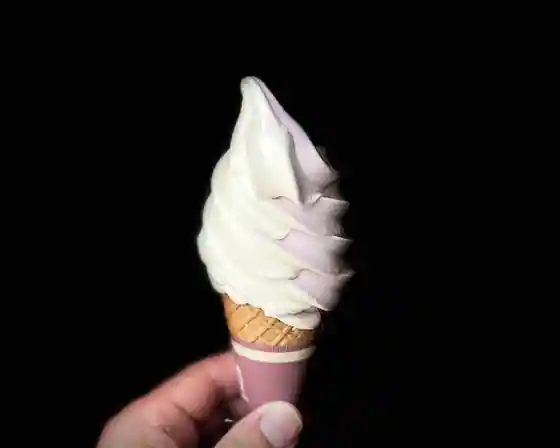
Michi No Eki Sakura Toge
とんとん家
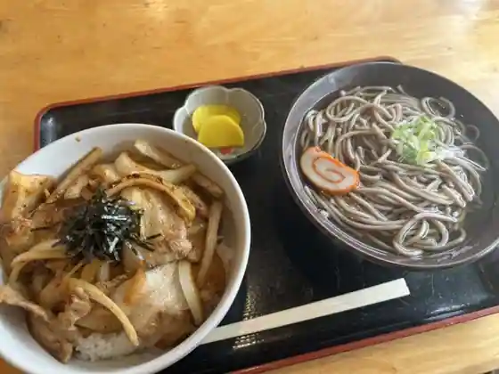
Tonton Ie
能登パン
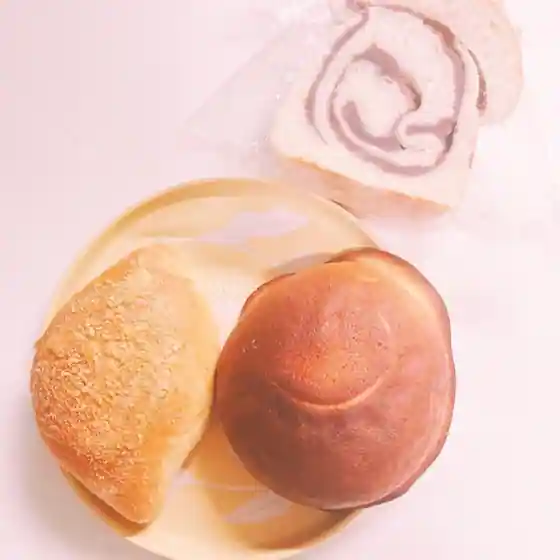
Noto Bakery
茂平食堂
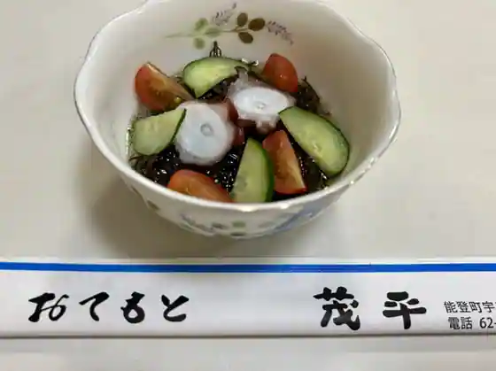
Mohei Shokudo
なかの洋菓子店
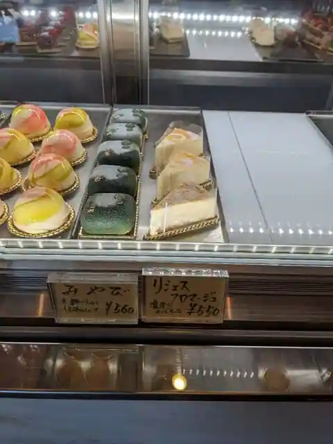
Nakano Yogashi
居肴屋 風来坊
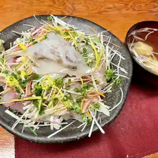
Kyo Sakanaya Furaibo
恋路アルバカレー
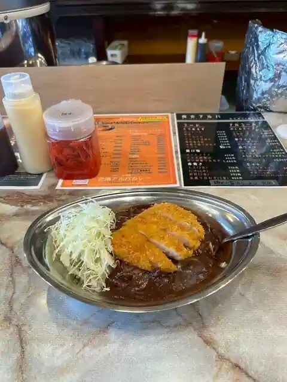
Koiji Arubakare
ふわ
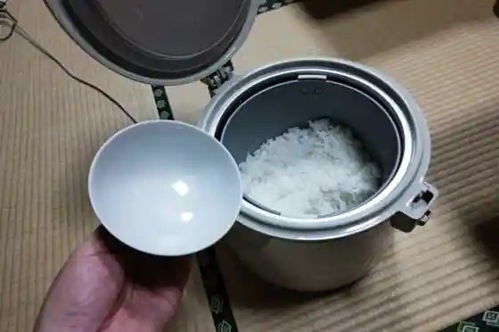
Fuwa
Sights
Ika no Eki Tsuku Moru

Tsukumo Wan
Koiji Coast

Roadside Station Sakura Toge

no to Kaiyo Fureai Center

Mawaki Iseki
Yanagida Shokubutsu Park
Ishikawaken Yanagida Hoshi no Kansatsu Kan (Dodan)
Ishikawa Prefectural Noto Shonen Nature no Ie Reiwa 6 Nen (2024 Nen) Noto Peninsula Jishin no Eikyo Niyori Tomen no Kan Kyukan
Ajisai Tera (Byodo Tera)
Seminahausu (Yama Biko)
Kokuminshukusha Noto Yanagida So
Asutorokoteji
Tsukumo Wan Enchi Campground
Fisshinguburijji Akasaki
no to Kiriopun Garden 2026
no to no Fakutorii
Goshikigahama Beach
Senjojiki Pogatto Park
Ishikawaken Kaiyo Gyogyo Science Museum (Umitosakana no Science Museum) Reiwa 6 Nen (2024 Nen) Noto Peninsula Jishin no Eikyo Niyori Tomen no Kan Rinji Kyukanchu
En Shima Yama Park
Akasaki Ichigo Sono
Miyaji Koryu Shukuhakujo Kobushi
Akasaki Coast
Noto Kankojoho Suteshon Tabi Suta
TSUKUMO STYLE
Buruberii Tsumi Tori Experience (Yanagida Buruberii Sono)
Heart&Beer Nihonkai Kurabu
Sarubiarodo
Fujinami Sports Park
Noto Town Hall